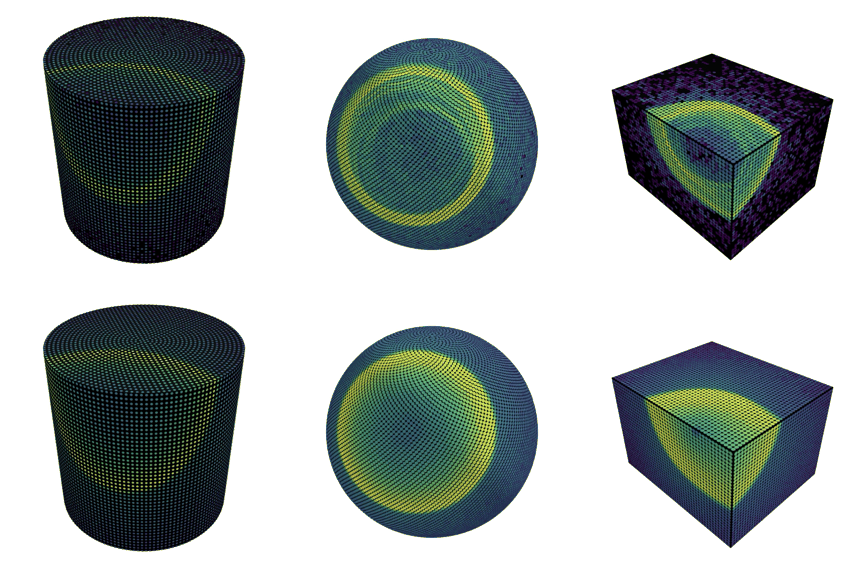

LUCiD: differentiable simulation of optical particle detectors
LUCiD (Light-based Unified Calibration and trackIng Differentiable simulation) simulates optical photon transport in particle detectors and is written in JAX. For a particle track or a calibration source it computes the expected charge and hit times on every sensor, together with their derivatives with respect to the track and to the detector's optical parameters. Calibration and track reconstruction then become gradient-based fits to the observed data. It is written for people working on water Cherenkov detectors, water-based liquid scintillator (WbLS) and neutrino telescopes in ice.

What it does
- Light emission from muons and electrons comes from a small neural network (SIREN)
trained on GEANT4 photon tables from PhotonSim, so running LUCiD does not need GEANT4.
Propagation includes absorption, Rayleigh and Mie scattering, and reflection off the walls
and sensors. The forward model works with
jax.grad,jax.vmapandjax.jit. - Reconstruction fits a track's energy, vertex, direction and start time to the per-PMT charge and first-hit times, starting from seeds taken from the data and refining with a Gauss-Newton fit on the autodiff derivatives (reconstruction guide).
- Calibration fits the global optical parameters (absorption, scattering, wall and sensor reflectivity, quantum efficiency) and the per-PMT gains to laser and flasher data, and gives the Cramér-Rao bound on the optical parameters (calibration guide).
- A detector is a pair of JSON configuration files. Eighteen are included: cylinders (among them Super-Kamiokande, Hyper-Kamiokande and WCTE with their measured PMT positions), spheres, boxes, and the 86-string IceCube layout in ice (bundled detectors).
- New GEANT4 datasets, for training an emitter or for other studies, are produced with
PhotonSim on a local machine, in the
ghcr.io/cider-ml/lucidcontainer or on a cluster (producing datasets).
Getting started
Simulation, calibration and reconstruction need only JAX and a few Python packages. LUCiD is installed from a clone; Python 3.10 with jax 0.5.3 is the tested version.
git clone https://github.com/CIDeR-ML/LUCiD.git && cd LUCiD
python3.10 -m venv .venv && . .venv/bin/activate
pip install -e . -c tests/constraints.txt
python scripts/download_data.py # SIREN weights and example events, 142 MB
python examples/hello_simulate.py # one 1 GeV muon, writes hello_simulate.pngThe last command takes about a minute on four CPU cores. The installation page covers GPU builds and optional extras, and the quickstart goes through the example and its gradient. The documentation also describes the physics model, the configuration files and the command-line tools.
Citation
If you use LUCiD, please cite:
O. Alterkait, C. Jesús-Valls, R. Matsumoto, P. de Perio, K. Terao, End-to-end Differentiable Calibration and Reconstruction for Optical Particle Detectors, arXiv:2602.24129 (2026).
The repository's CITATION.cff has the same reference in machine-readable form.
Code
The source is at github.com/CIDeR-ML/LUCiD. No open licence has been granted yet; the LICENSE file states the current terms.